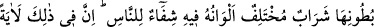
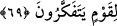

değildir. Ebû Hanîfe der ki: Eşek arısı ve diğer haşerât gibi bal arısının da satılması
sahih değildir. İpek böceği üretilen kurdu satmak ise caizdir.
“Dağlardan,” dağların oyuk yerlerinden “ağaçlardan” ağaçların bir kısmından,
anlamınadır. Çünkü arı her ağaca petek yapmaz. Yâni sâhibi ve mâliki olmayan dağ
tarafındaki boş ağaçların aralarında “ve insanların yaptıkları çardaklardan”
çardakların bir kısmından demektir. Çünkü arı insanların yaptıkları her çardakta petek
yapmaz. Bazıları der ki: Arı, insanların çardak gibi yaptıkları asma, tavan, duvar ve
benzeri şeylere petek yapar. “Kendine” barınacak altıgen “evler (kovanlar) edinir.”
Arının bal yapmak için ördüğü petek, insanların binalarına benzediği için ‘ev’ diye
isimlendirilmiştir. Arının balı depolamak için yaptığı petek insanların yaptığı binalara
benzetilerek “ev” diye isimlendirilmiştir. Çünkü arının pergel ve cetvel olmadan
birbirine eşit altıgen şeklinde yaptığı bu evlerde, usta mühendislerin ancak âlet ve dakik
projelerle yapabildikleri ustalık ve güzel sanat vardır. Arı evini yaparken altıgeni tercih
etmiştir. Çünkü altıgen; üçgen, dörtgen ve beşgenden daha geniştir. Daire ve diğer
çokgenler birleştirildiğinde aralarında boşluklar kaldığı gibi altıgenler bir araya
getirildiğinde aralarında boşluk kalmaz.
Hayvan için istirahat yerini arayıp bulduktan sonra en önemli şey yiyecek meselesidir.
Bu yüzden ikinci defa o zikredilmiştir. Bu da, genel olarak bütün meyvelere şâmil
olduğundan sonraki âyet terahî ifâde eden “sümme (sonra)” ile başlamıştır. Ayrıca
bunda arının hayret veren bu işini Allah’ın ona kolaylaştırdığına da işâret vardır. Allah
Teâlâ şöyle buyuruyor:
69. “Sonra meyvelerin her birinden ye ve Rabbinin sana kolay kıldığı yollarına
gir.” Onların karınlarından renkleri çeşitli bir şerbet (bal) çıkar ki, onda insanlar
için şifa vardır. Elbette bunda düşünen bir kavim için büyük bir ibret vardır.
“Sonra meyvelerin her birinden ye.” Bu ifâde, rızkın çokluğuna işâret etmektedir.
“Kendisine (Belkıs’a) her şey verilmiş.” (en-Neml, 27/23) âyetinde de olduğu gibi
çokluk bildirmektedir. Ya da tatlı, ekşi, acı ve diğer canının çektiği bütün meyvelerden
ye, demektir.
“Ve Rabbinin sana kolay kıldığı yollarına gir.” Yâni evinden uzak yerlerdeki
meyvelerden yemek istediğinde, Rabbinin sana ilham ettiği ve uzaklaştıktan sonra tekrar
geri dönmeyi öğrettiği dağların ve ağaçların arasındaki yollara gir.